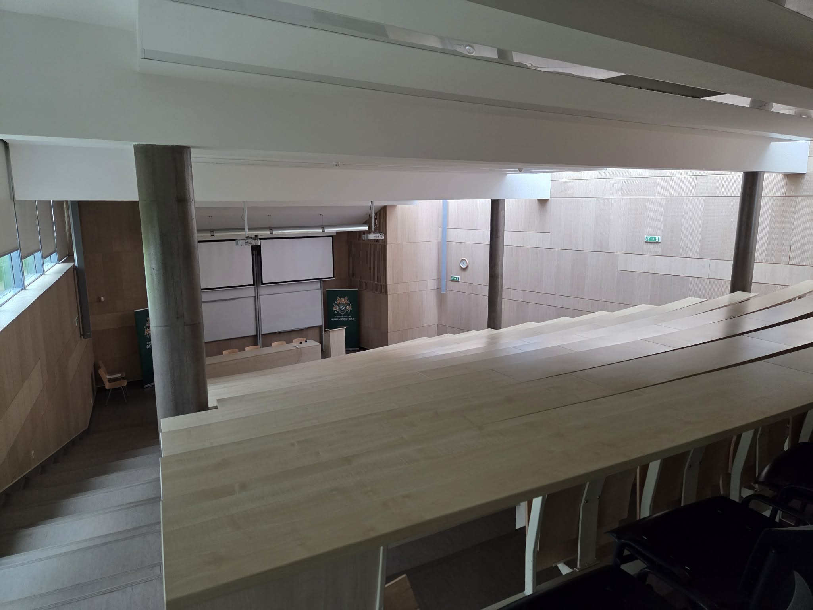

2学期やる気なくなる問題
みなさんこんにちは。
ハンガリー留学ラボのユウゴです。
今回は「2学期やる気なくなる問題」について書いてみます。
大学生共通の怠け
日本の大学に通う友人から、「2学期から一気に怠けてしまう」という話をよく聞いていました。
海外大学ならそんなことはないだろうと思っていたのですが、私も同じようにかなり怠けてしまいました。
具体的には、朝起きるのが遅くなる、出席がない授業を休む、復習をサボる、自炊をせずデリバリーが増えるなどです。
学期中に「怠けているな」と自覚していたのですが、それでも改善できませんでした。 土日に一番時間を使っていたのは、勉強や外出ではなくNetflixでした。
周りの友達も？
怠けてしまった理由の一つに、友達と会う時間が減ったこともありました。
友達はラマダンの影響で日中の活力が出ず、出席がない授業を休むことが増えていました。 「友達も来ないなら今日はいいかな」と甘えてしまうことも多かったです。
一方で、海外の友達はそこまで怠けている印象はなく、普段通り大学へ通っている人が多かったように思います。
勉強はどうだった？
復習をほとんどせず、授業に出るだけではやはり勉強はかなり大変でした。
毎週の授業が試験に直結するわけではありませんが、内容が分からないままだと不安になります。
その不安からさらに勉強を避け、Netflixを見てジャンクフードを食べるという悪循環になってしまいました。
今学期は中間試験がほとんどなかったため、期末試験直前までダラダラしてしまいました。 その結果、11〜12週間分を一気に復習することになり、本当に大変でした。
特に大変だったこと
- 11〜12週間分を短期間で総復習
- 過去問対策も同時進行
- 毎年多くの不合格者が出る難しい科目もあった
私が通うUniversity of Debrecenでは、科目によっては落とすと留年につながるものもあります。 内容もかなり難しく、毎年不合格者が出るため、期末試験は本当に大変でした。

どうやって乗り越える？
振り返ってみると、「これをやっておけばよかった」と思うことが2つあります。
1. とにかく外出する
家でダラダラNetflixを見るくらいなら、街を散歩したり、ブダペストへ行ったり、カフェへ行った方が気分転換になります。
気分が変わると、勉強へのモチベーションも少しずつ戻ってきます。
2. 毎日少しでも勉強する
当たり前のことですが、一番大切だと思いました。
毎日1〜2時間でも勉強するだけで、その学期全体の質は大きく変わります。
「試験期間だけ頑張る」は最終手段です。 学期を通して少しずつ積み重ねておく方が、精神的にもかなり楽になります。
まとめ
留学前はモチベーションが高く、「自分は絶対に怠けない」と思っていました。
でも実際には、海外大学でも人は普通に怠けます。
その中で、完全にダラダラ過ごすのか、それとも少しずつ勉強や外出を続けるのかで、留学生活の充実度は大きく変わると思います。
これから留学する方は、ぜひ参考にしてみてください。
他の現役生のリアルな体験談も聞いてみたい方は、ぜひ面談をご利用ください。